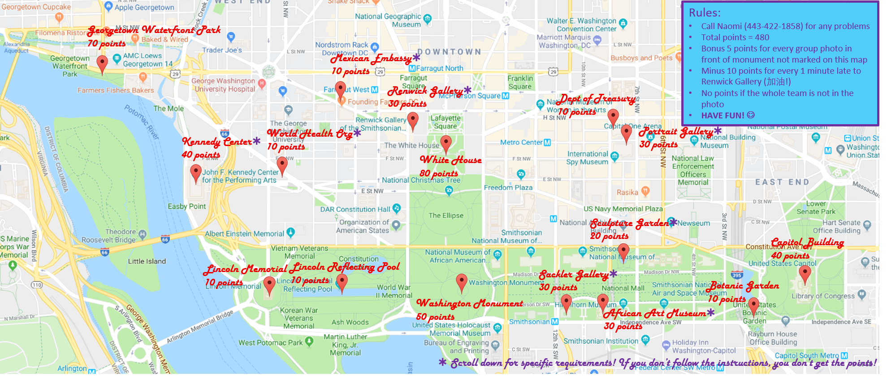
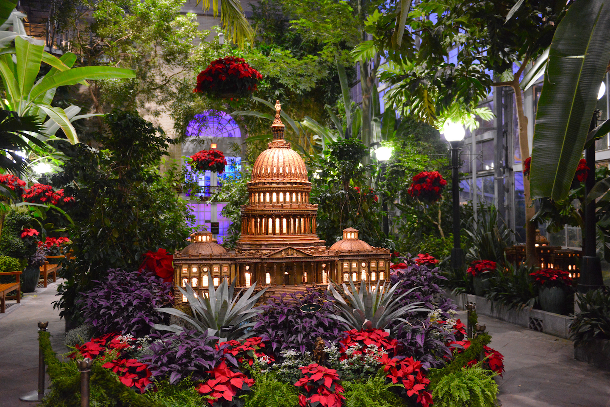
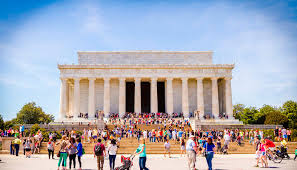
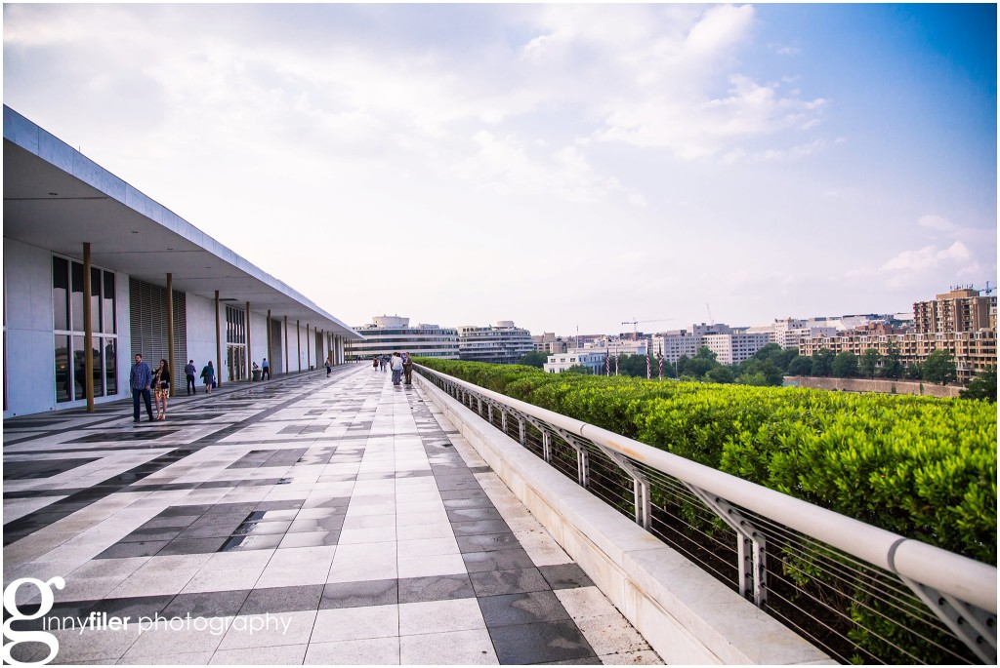

Remember: All team members must be in each photo, and make sure you're on time to Renwick at 5:00. Every minute late is 10 points off your total! Good luck!
Tasks:
Take a group photo with the sign outside of the World Health Organization (10 points)

___________________________________
Take a group photo with the flag at the Mexican Embassy (10 points)

___________________________________
Take a photo with the blue lady at the Renwick Gallery (30 points)

___________________________________
Take a photo outside of the White House! (80 points)

___________________________________
Take a photo outside of the Treasury Department (10 points)

___________________________________
Take a group pic with James Madison at the National Portrait Gallery! (30 points)

___________________________________
Take a group pic with this weird crushed car by the Sculpture Garden (20 points)

___________________________________
Take a group pic with the Capitol Building in the background (40 points)
___________________________________
Take a group pic with any purple flower at the Botanic Garden (10 points)

___________________________________
Take a group pic by the fountain at the Museum of African American Art (30 points)

___________________________________
Take a pic with the ancient Chinese bells at the Sackler Gallery (30 points)

___________________________________
Take a pic with the Washington Monument in the background (50 points)

___________________________________
Take a pic at the Lincoln reflecting pool (10 points)

___________________________________
Take a pic with the Lincoln Memorial in the background (10 points)

___________________________________
Take a group photo on the upstairs balcony at the Kennedy Center (40 points)

___________________________________
Take a group photo at the Georgetown Waterfront (70 points)